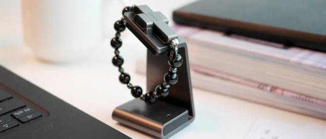

Le chapelet connecté du Vatican

-
Accompagnement des fidèles dans les pater, credo et misère.
-
Connecté a votre smartphone, il capte aussi le nombre de pas effectués ainsi que les calories brulées lorsqu’il se trouve dans votre poche ou sac.
-
Résistant à l’eau (norme IP67)